Your direction: modern transitions and transform animations throughout, for a clean, smooth UI.
Open tow-motion.html for a 28 s live drive on the locked Towing A (round 40):
cruise set and adjust, a page change, a trailer brake event with the cruise cancel, a climb, a head temperature alert, a drive mode change, and a crawl turn.
?t=<ms> holds one frame; ?pg=b shows card page change B.
Every frame on this page passes the margin check (capture.js: 60 frames).
One source: kit41.css. The mock reads the tokens; the QML column is the device equivalent.
The cluster runs Qt 5.14 on eglfs with the Mali GPU (/etc/qtenv.sh), so transform, opacity, and colour animate on the GPU.
| Token | Value | QML | Use |
|---|---|---|---|
| --m-fast | 120 ms | duration: 120 | Alert in, small exits, colour changes |
| --m-base | 200 ms | duration: 200 | Moves: focus, cruise arrow, chips, switches, segment pill |
| --m-slow | 280 ms | duration: 280 | Page and column enter, background glow |
| --m-smooth | 120 ms time constant | Behavior { SmoothedAnimation { velocity: -1; duration: 240 } } | Continuous readings: speed bar, rpm and boost bands, steering arc, cruise arrow, brake meter |
| --m-slide | 56 px | x offset | Largest slide distance |
| --ease-out | cubic-bezier(.33, 1, .68, 1) | Easing.OutCubic | Every enter and move |
| --ease-in | cubic-bezier(.32, 0, .67, 0) | Easing.InCubic | Every exit |
Behavior on vehicleSpeed), which also delayed the digits. The spec smooths only the gauge position.A slides the old page out and the new page in, in the page order (56 px, 120 ms out, 280 ms in). B crossfades (120 ms out, 200 ms in). Recommendation: A. The direction tells the driver which way the page moved, and a jump on a trailer brake or a climb reads as a page change, not a flicker.
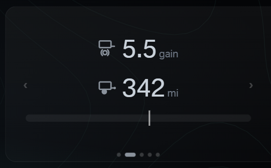
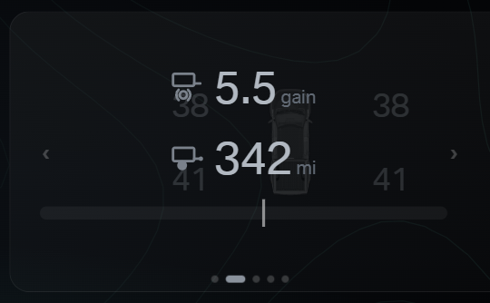
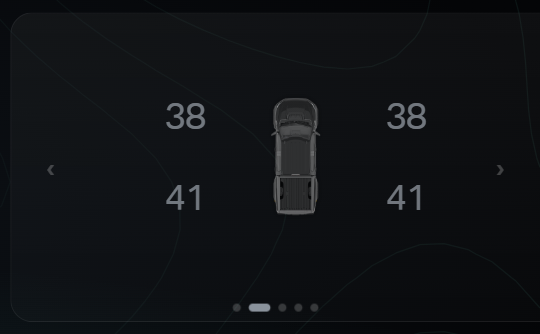
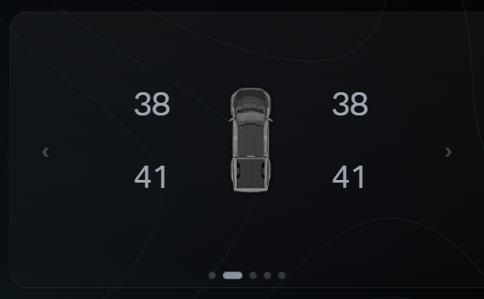
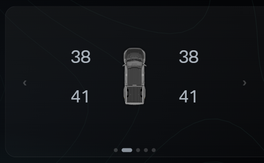
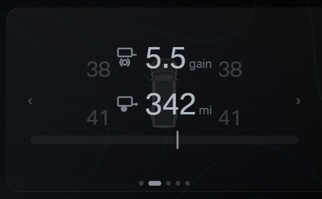
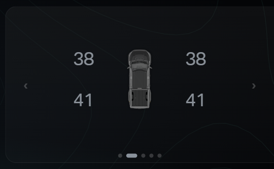

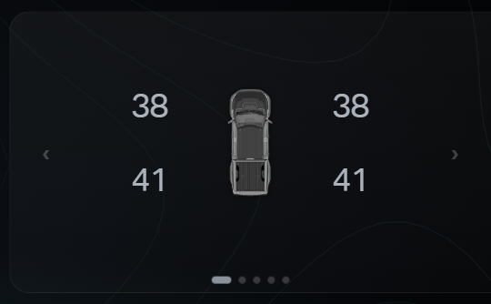
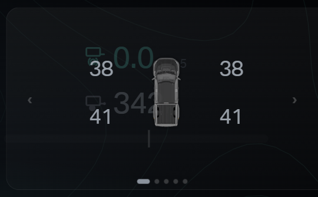
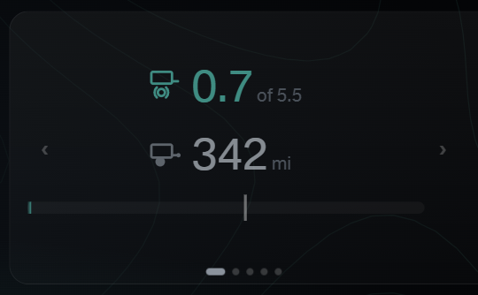
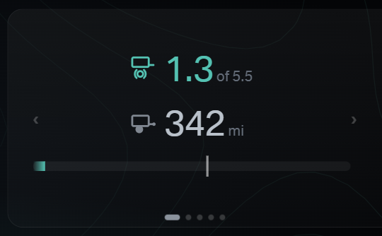
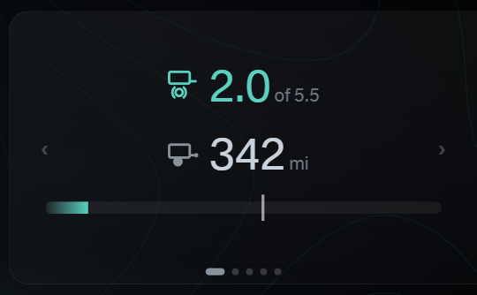
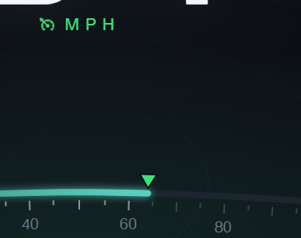
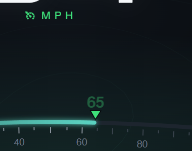
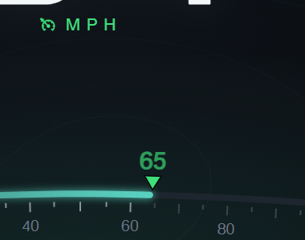
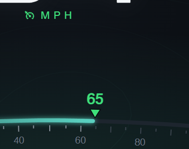
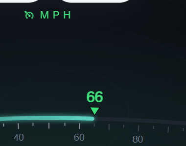
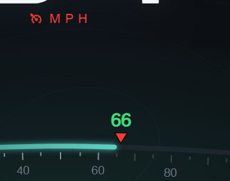
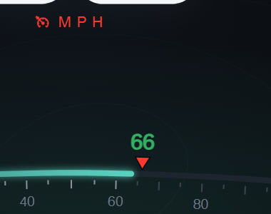
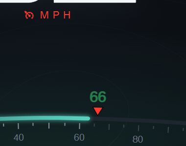
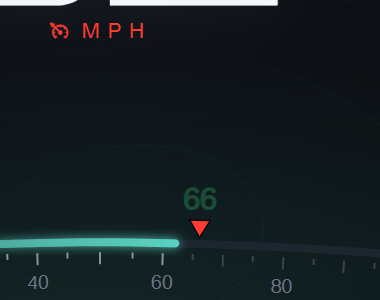
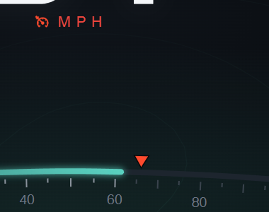
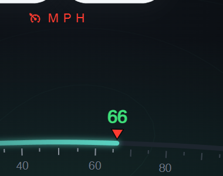

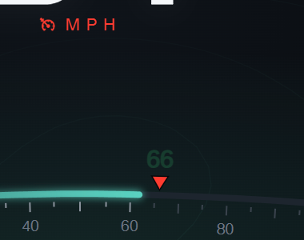
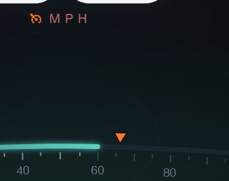
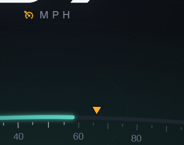

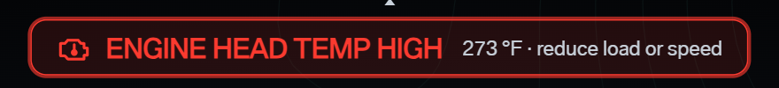
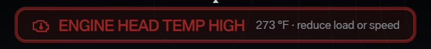
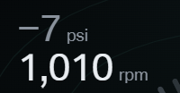
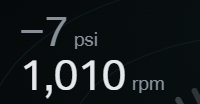
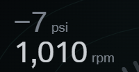
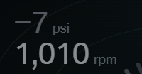
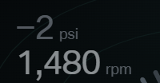
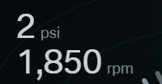
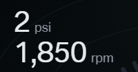
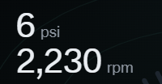
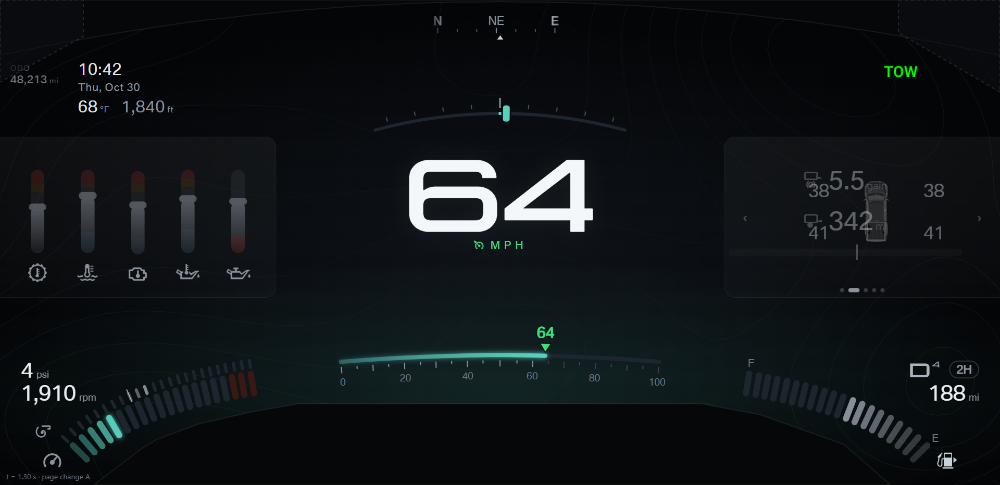
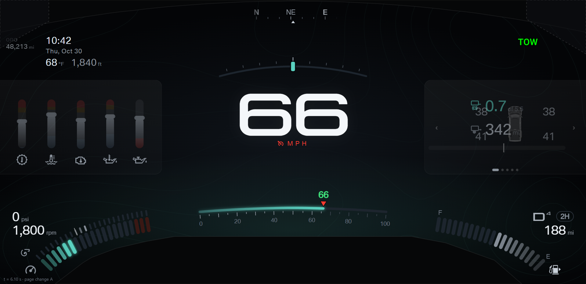
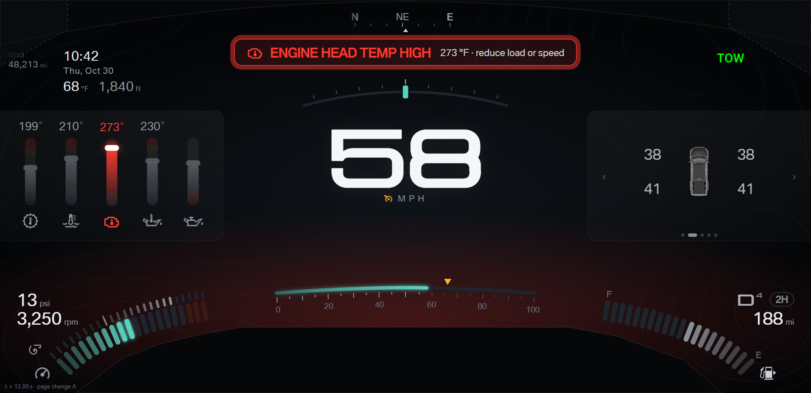